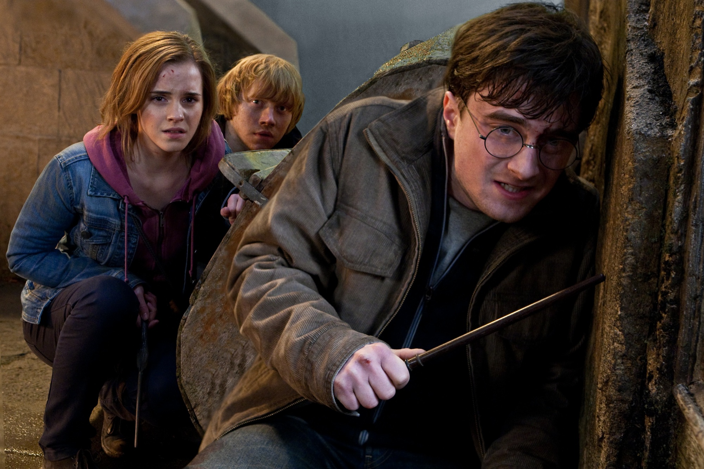
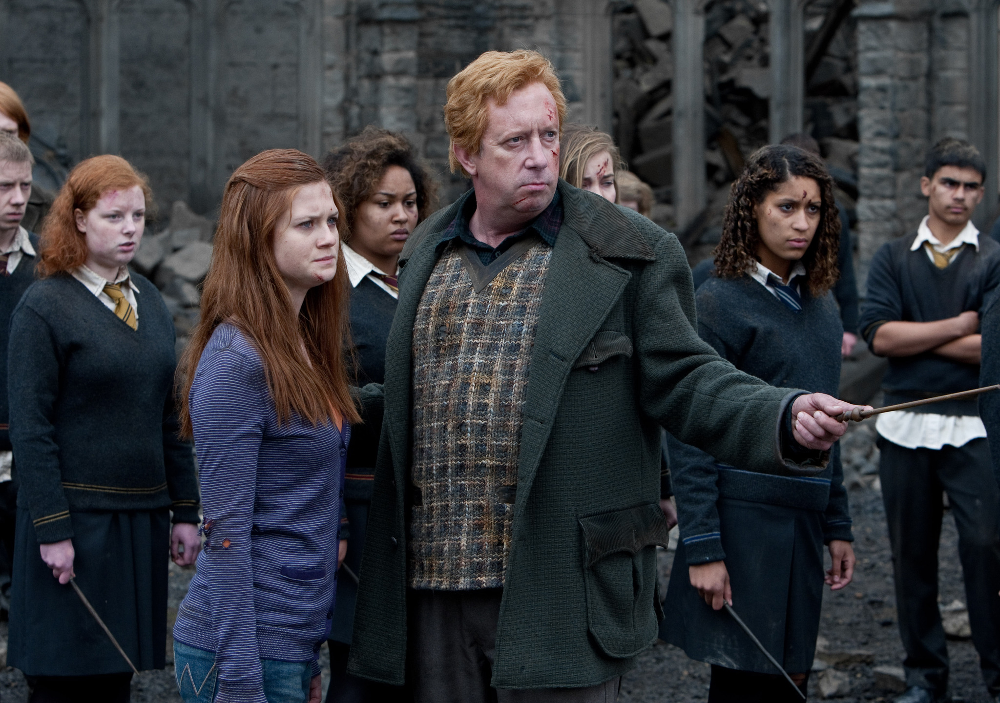
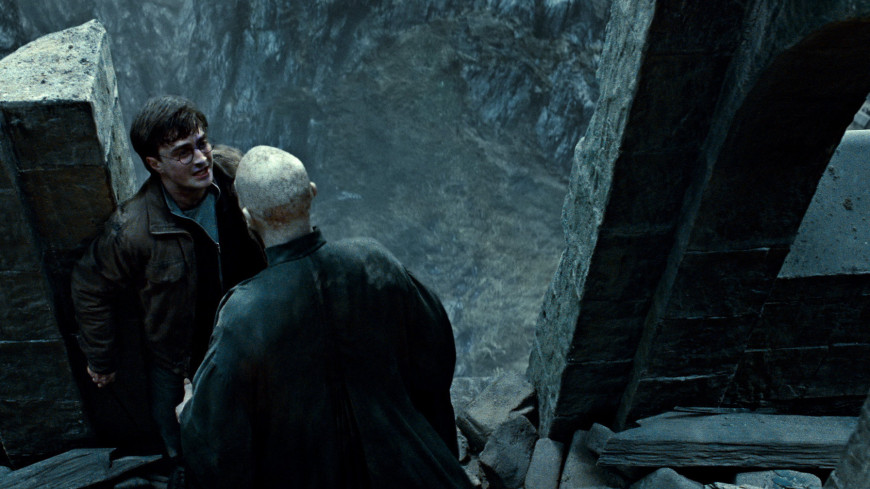
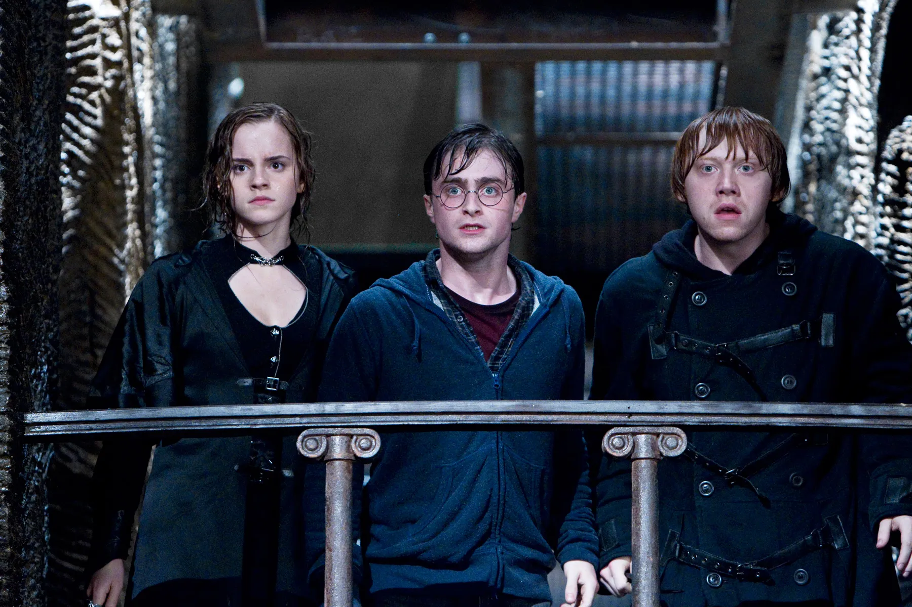
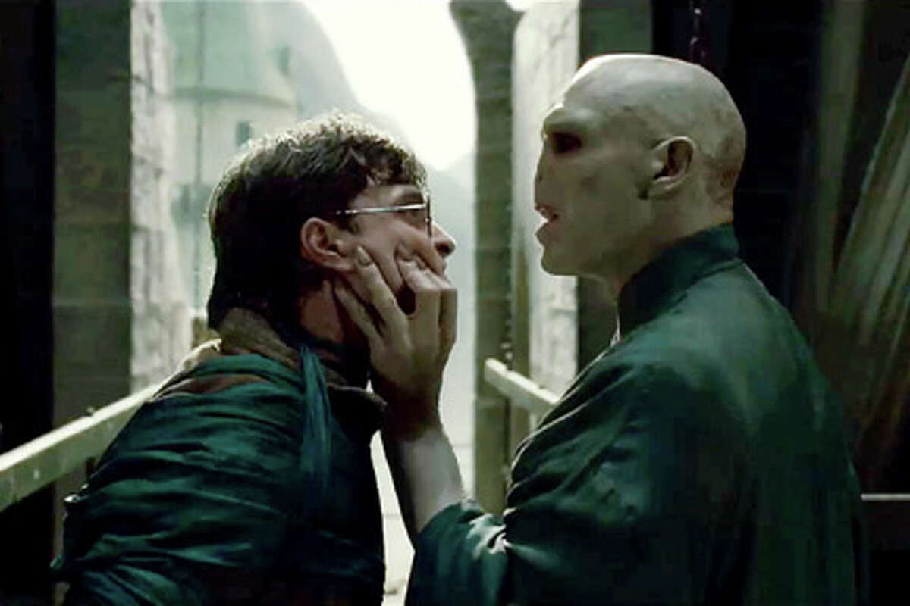

A clash between good and evil awaits as young Harry (Daniel Radcliffe), Ron (Rupert Grint) and Hermione (Emma Watson) prepare for a final battle against Lord Voldemort (Ralph Fiennes). Harry has grown into a steely lad on a mission to rid the world of evil.
The friends must search for the Horcruxes that keep the dastardly wizard immortal. Harry and Voldemort meet at Hogwarts Castle for an epic showdown where the forces of darkness may finally meet their match.
    Cast: